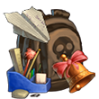
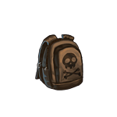
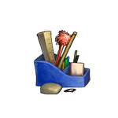
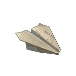
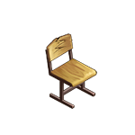
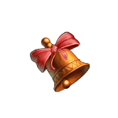

Получено: файл; исходный URL. Иллюстрация «Школьная коллекция» из каталога ViveR_9, сопоставлена по точному названию; возможны отличия версий. Оригинальный файл без перекодирования; авторство отдельно не установлено. Страница: источник.
Школьная коллекция
Браузерная социальная версия; историческая статья; дата редакции неизвестна- Тип
- Коллекции
- Версия и дата
- Браузерная социальная версия; историческая статья; дата редакции неизвестна
Элементы коллекции





Данные по источнику · Браузерная социальная версия · историческая статья; дата редакции неизвестна
Предварительно: один материал, требуется сверка. Требуется сверка.
- Состав (источник Zombie-island)
- Ранец; Принадлежности; Самолётик; Кресло; Последний звонок.
- Награда (источник Zombie-island)
- 1 Книги; 50000 Монеты.
- Где копать Школьную коллекцию в Зомби Ферме лопатами
- Воздушное сердце; Воздушный букет; Золотой миллиард; Снежная Ш; Снежная Н; Снежная М; Снежная Я; Голубой шар; Красный шар; Зонтик; Осенний зонт; Марафонец; Флаг Марафонца.
- Школьная коллекция попадается в ведрах Рыбаков и в мешках Звездочетов
- Рыбак; Рыбак с мозгами; Звездочет; Звездочет за зомбаксы.
- Школьную коллекцию можно найти в ценностях и сокровищах
- Сюрприз бригады; Коллекционер 2; Ящик Дворника; Сундук Чудовища 3; Веселая карусель.
- Школьная коллекция можно наколдовать Палочками
- Палочка-выручалочка; Подземный кактус; Черный мрамор; Белый мрамор; Зеленый мрамор.
- Школьная коллекция участвует в строительстве
- Экспедитор-2.


Данные по источнику · ВКонтакте, ZombieS Forever · дата редакции не установлена
Предварительно: Историческая фанатская страница; независимость от других источников не установлена. Возможны различия версий и дат.. Требуется сверка.
- Награда по ZombieS Forever
- 50 000 монет и книги
- Места получения: выборка из источника
- В подземелье.
Данные по источнику · браузерная версия; платформа не указана · дата редакции не установлена
Предварительно: Содержимое списка: изображения и колонки могут терять смысл при извлечении текста; отдельная страница и дата не проверены. Подписи alt иногда ошибочны.. Требуется сверка.
- Текст карточки из каталога
- 50 000 монет и Книги Ранец Принадлежности Самолётик Кресло Последний звонок Где копать (Лопатами): Красный шар, Голубой шар, Осенний зонт, Марафонец, Флаг Марафонца В ледяных буквах из школы, например, "М", "Н, ""Ш", "Я".
Данные по источнику · браузерная версия; на сайте указана игра ВКонтакте · дата редакции не установлена
Предварительно: Исторический текст; сильно совпадает со справкой Zommbie.at.ua, независимость не доказана. Отрицания и доступность могут измениться с патчем.. Требуется сверка.
- Где искать по странице «Зомбастики»
- Некоторые снежные буквы, например М, Н, Р, Я, Ш, которые создаются в Школе; кактусы в Мексиканском каньоне.
Данные по источнику · историческая браузерная версия, платформа не указана · 10.01.2014 — дата в каталоге; дата редакции материала неизвестна
Предварительно: Фанатский список без вероятностей и уточнения площадки; независимость от других источников не установлена.. Требуется сверка.
- Где искать по списку сайта
- Можно выкопать под некоторыми снежными буквами (например, М,Н,Р,Я,Ш), которые создаются в Школе и кактусами в Мексиканском каньоне.
- Оговорка
- Список может относиться к разным условиям, инструментам и периодам игры; не доказывает гарантированное выпадение. Заявления «только» и «невозможно» относятся лишь к времени и версии источника.
Связанные сущности
нет проверенных связей — требуется сверка.
Источники
- прочитано: Zombie-island.moy.su; проверка 2026-11-21
- Прочитана статья или строка таблицы; требуется сверка
- ZOMBIA: прочитана карточка в списке
- Ссылка на отдельную страницу; отдельно не проверена
- Зомбастики: прочитана соответствующая строка; возможная копия другого справочника
- ViveR_9: изображение в каталоге коллекций; совпадение названия
- zommbie.at.ua: где искать коллекции